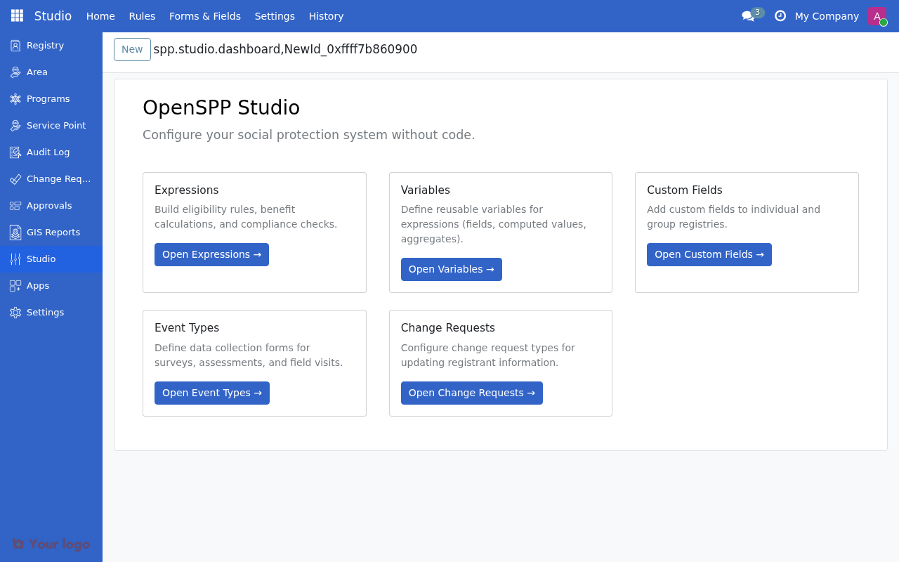

Variables Overview
Contents
Variables Overview#
This guide is for implementers configuring OpenSPP's variable system. You should be comfortable with CEL expressions but don't need to write code.
What Are Variables?#
Variables are named data points you can reference in CEL expressions. They provide a layer of abstraction between your business logic and the underlying data.
Example: Instead of writing registrant.custom_field_income, you reference income in your expressions.
Without Variables |
With Variables |
|---|---|
|
|
Breaks if field renamed |
Variable handles the mapping |
No caching |
Built-in caching support |
No historical tracking |
Period granularity options |
Mental Model#
Think of variables in three layers:
┌───────────────────────────────────────────────────────┐
│ 1. SOURCE │
│ Where data comes from: │
│ • Model field (res.partner.income) │
│ • Computed CEL expression │
│ • Aggregate over members │
│ • External API │
└───────────────────────────────────────────────────────┘
│
│ processed by
▼
┌───────────────────────────────────────────────────────┐
│ 2. VARIABLE │
│ Configuration: │
│ • Name: income │
│ • Label: Household Income │
│ • Value Type: Money │
│ • Cache: TTL 1 hour │
└───────────────────────────────────────────────────────┘
│
│ referenced in
▼
┌───────────────────────────────────────────────────────┐
│ 3. CEL EXPRESSION │
│ Usage: │
│ income > poverty_line │
│ child_count >= 3 │
│ has_disability == true │
└───────────────────────────────────────────────────────┘
Source Types#
Variables can get their data from different sources:
Source Type |
Description |
Example |
|---|---|---|
Model Field |
Direct reference to a field on a model |
|
Computed (CEL) |
Calculated from a CEL expression |
|
Aggregate |
Computed over household members |
Count children under 5 → |
External |
Fetched from external data provider |
API lookup → |
Constant |
Fixed value, optionally program-configurable |
Poverty line → |
Vocabulary |
Value from a vocabulary concept group |
Gender concept → |
Scoring |
Result from a scoring/PMT calculation |
PMT score → |
Value Types#
Each variable has a value type that determines how it's used:
Value Type |
CEL Type |
Example |
|---|---|---|
Number |
double/int |
|
Yes/No |
bool |
|
Text |
string |
|
Date |
timestamp |
|
Money |
double |
|
List |
list |
|
Applies To#
Variables are scoped to specific registrant types:
Scope |
Use For |
|---|---|
Individual |
Person-level data (age, gender, disability) |
Group/Household |
Household-level data (size, income, location) |
Both |
Works for either context |
Caching#
Variables support different caching strategies for performance:
Strategy |
When Cached |
Use Case |
|---|---|---|
No Caching |
Never |
Frequently changing data, small datasets |
Session |
Per request/batch |
Eligibility batch processing |
TTL-based |
For specified duration |
Stable data, API rate limits |
Manual |
On explicit trigger |
Data refreshed on schedule |
TTL Example:
Cache Strategy: TTL-based
Cache TTL: 3600 seconds (1 hour)
The variable value is computed once and reused for 1 hour before refreshing.

Period Granularity#
Variables can track values over time:
Granularity |
Description |
Example |
|---|---|---|
Current |
Always latest value |
Current income |
Daily |
Value per day |
Daily attendance |
Monthly |
Value per month |
Monthly earnings |
Quarterly |
Value per quarter |
Quarterly assessment score |
Yearly |
Value per year |
Annual income |
Snapshot |
Point-in-time freeze |
Income at enrollment |

Snapshot Example: Capture household income at the moment of program enrollment, even if it changes later.
Categories#
Variables are organized into categories for easier management:
Category |
Typical Variables |
|---|---|
Demographics |
age, gender, marital_status |
Household |
hh_size, child_count, dependency_ratio |
Economic |
income, assets, employment_status |
Health |
disability_status, chronic_illness |
Program |
enrollment_date, benefit_amount |
Variable Lifecycle#
Draft → Active → Inactive
↑ │
│ │ (can reactivate)
└────────┘
State |
Description |
|---|---|
Draft |
Being configured, not usable in expressions |
Active |
Available for use in CEL expressions |
Inactive |
Hidden from variable picker, existing references still work |
Common Patterns#
Pattern 1: Field Reference#
Map a model field to a simpler variable name.
Setting |
Value |
|---|---|
Source Type |
Model Field |
Source Model |
res.partner |
Source Field |
x_custom_income |
Name |
income |
Label |
Household Income |
Value Type |
Money |
CEL Usage: income > 5000
Pattern 2: Age Calculation#
Compute age from birthdate.
Setting |
Value |
|---|---|
Source Type |
Computed (CEL) |
CEL Expression |
|
Name |
age |
Label |
Age in Years |
Value Type |
Number |
CEL Usage: age >= 18 && age <= 65
Pattern 3: Household Member Count#
Count members meeting criteria.
Setting |
Value |
|---|---|
Source Type |
Member Aggregate |
Aggregate Type |
Count |
Aggregate Target |
Household Members |
Aggregate Filter |
|
Name |
children_under_5 |
CEL Usage: children_under_5 >= 1
Pattern 4: Program Constant#
Define a threshold that programs can override.
Setting |
Value |
|---|---|
Source Type |
Constant/Parameter |
Default Value |
5000 |
Program Configurable |
Yes |
Name |
poverty_line |
Label |
Poverty Line Threshold |
CEL Usage: income < poverty_line
Navigation#
Variables are configured in Studio → Variables.

Menu |
Purpose |
|---|---|
All Variables |
View, create, and manage variables |
Categories |
Create and organize variable categories |

Are You Stuck?#
Variable not appearing in CEL autocomplete?
Check that the variable state is "Active". Draft variables don't appear in the picker.
Getting stale cached values?
For TTL-based caching, wait for the TTL to expire or switch to "No Caching" for testing. For manual cache, trigger a refresh.
Aggregate returning wrong count?
Check the aggregate filter expression. Use m. prefix for member fields (e.g., m.birthdate, m.gender).
What's the difference between Source Type and Value Type?
Source Type is where the data comes from (field, computed, aggregate). Value Type is what kind of data it is (number, text, date).
Next Steps#
To... |
See... |
|---|---|
Create a new variable |
|
Understand different source types |
|
Use variables in expressions |
|
Learn CEL basics |